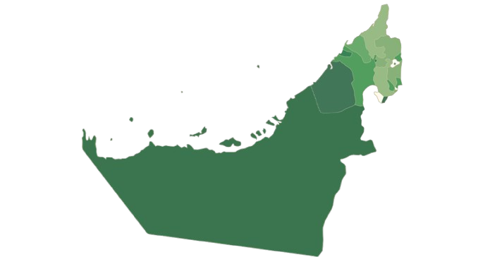
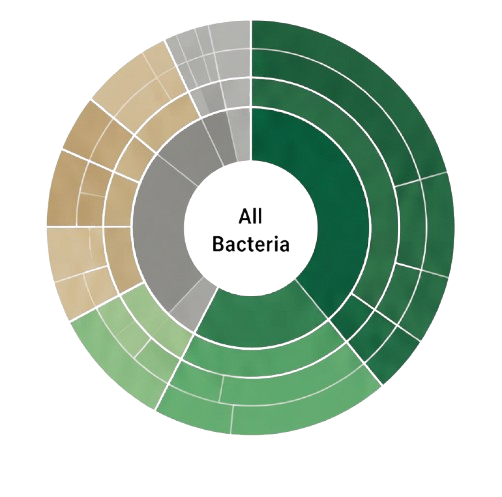

Exploring microbial diversity across the Emirates for forensic and research advancement.
EXPLORE DATABASE →Click an emirate to view details

The UAE is home to 200+ nationalities, each bringing unique microbial signatures. Explore the unseen diversity that connects us all.

Supporting advanced forensic investigations using microbial signatures.
Contributing to global microbiome research and knowledge.
Representing 200+ nationalities and their unique microbial identities.
All data is anonymized and handled with the highest confidentiality.